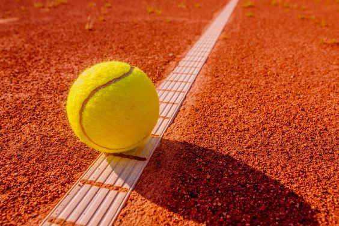
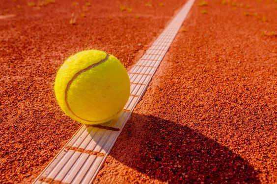

Интересные факты про большой теннис
1. Мячи в теннисе
До 1972-го года не существовало строгих правил, касающихся цвета теннисных мячей. Но после показа первых турниров по телевизору, выяснилось, что лучше всего зрителям видны яркие флуоресцентно желтые мячики. Устроители Уимбилдона же использовали белые мячи вплоть до 1985-года.
2. Счет в теннисе
Как известно, счет в теннисе ведется не совсем обычным образом: ноль, пятнадцать, тридцать и сорок.
Почему используются именно эти числа? По легенде, в начале возникновения игры счет вели по часам, и
каждое очко отмечалось на циферблате перемещением стрелки на четверть оборота. Со временем сорок пять
трансформировалось для удобства в сорок.
Существует и другое объяснение. Согласно ему, в средневековых Франции и Германии уже существовали
ставки и игра на деньги, в том числе и в теннисе. Законы же, например, в Германии, запрещали ставки
свыше 60 динар. Вот и ставили за один гейм до 60 разрешённых динар, а так как бывшие в то время в ходу
монеты имели стоимость 15 динар, получалось как раз по 15 за каждое очко.
3. Турниры большого шлема
Турниры Большого шлема в современном теннисе — четыре самых крупных ежегодных турнира: Открытый чемпионат Австралии по теннису, Открытый чемпионат Франции по теннису, Уимблдонский турнир, Открытый чемпионат США по теннису.
 
